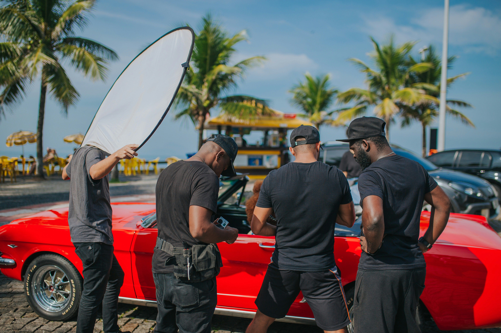
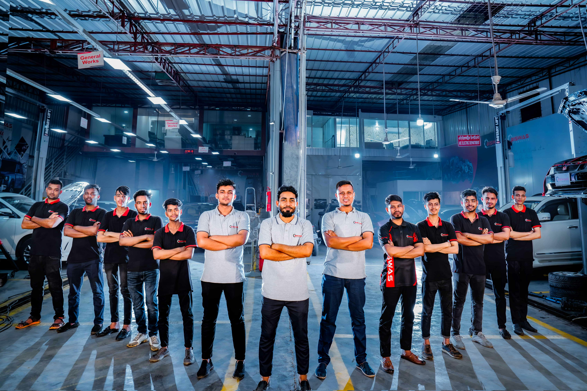

Elite Shine Auto Detailing was founded in 2024 in Soweto, Johannesburg. We started as a simple mobile car wash, going directly to our customers so they wouldn't have to leave their homes or offices. Over time, we grew our skills and offerings — and today, we are proud to offer full detailing and valet services that rival any professional car wash facility.
Our journey has been built on hard work, customer trust, and a passion for clean cars. Every vehicle we work on is treated with care and attention to detail.
To deliver top-quality, convenient, and affordable car wash and detailing services to every customer across Gauteng — at their door, on their schedule.
To grow Elite Shine into one of Gauteng's most recognised auto detailing brands, with a permanent office in the Johannesburg CBD and teams operating across the entire province.
We are a dedicated team of car care professionals passionate about delivering the best results for every vehicle we work on. Based in Soweto, we bring experience, energy, and attention to detail to every job.

Because we wash cars at homes and offices across Gauteng, we take water and environmental responsibility seriously — especially in a region that experiences regular water restrictions.
Our hand-wash methods use significantly less water than an automated drive-through car wash.
We use car-care products that are kinder to the soil and stormwater drains around your home.
Where municipal water is restricted, we can bring our own supply at no extra charge.
Book your next wash or detailing session with us today.
BOOK NOW